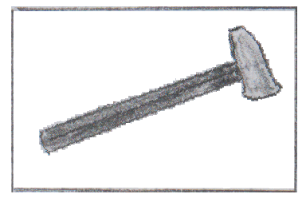

Dies ist eine private Webseite.
Dr. Heiko Wolf (kein Beamter).
Privater Forscher, Informatikkaufmann und Priester Graue Jedi (ausgebildet in
christlicher
Lehre Ebene Hausbibelkreis und Übergang ins allgemeine Priestertum durch die Taufe.
Private Werkstatt (Lehrstube, Sternwarte, Naturlabor).
Leipzig in den schwarzen Landen Sachsen, Deutschland (Germany).
| Privates religöse Wappen (Textbeschreibung: Rechteck (Buch), Hammers gerade mittig drüber gelegt der Kopf oben und das brennende zuckende Schwert als Bokken Holz Energiequelle der Flamme zu Asche. Es gilt das Gesetz und zwar was geschrieben steht und was nicht geschrieben ist ebenfalls gesetzt und wird durchgesetzt. (ab 24.04.2025 gültig) | |
|  | Privates religöse Wappen (Textbeschreibung: Rechteck (Buch), Jedihammers (in Form eines Hammers) drübergelegt also von links unten der Griff linke Seite) es gilt das Gesetz und zwar was geschrieben steht und was nicht geschrieben ist ebenfalls gesetzt. (bis 23.04.2025 gültig) |
E-Mail: heiko[.]wolf[.].mail[.][@]gmail[.]com (entfernen sie nur die [].)
Lehrkommunikation bzw. -tätigkeiten primär per E-Mail oder Post.
OCRID: 000-0003-3089-3076
Repos (git): https://github.com/der-magister
Youtube-Kanal: https://www.youtube.com/@heikowolf6788
Bluesky: https://bsky.app/profile/der-magister.bsky.social
Facebook: https://www.facebook.com/profile.php?id=100017433212546
Itch.io: https://der-magister.itch.io
Instagram: https://www.instagram.com/dermagister_/
Reddit: https://www.reddit.com/r/MagisterWorld/
Visitenkarte [PDF, (85 x 55)mm]
Lebenslauf 2025 (PDF)
Inhalte stehen (wenn nicht anders angegeben) unter der GNU Free Documentation License 1.3 (freie Verwendung unter der
üblichen diversen Nennungsformen des Autors).
Für externe Links wird keine Haftung für deren Inhalte genommen (die sind für ihren Scheiß selbst zuständig). Es ist auch unmöglich diese
ständig auf Rechtmäßigkeit zu überprüfen (wir haben anderes zu tun).
Fuer YouTube-Videos und Google Docs Links gelten die Google-Richtlinien:
https://policies.google.com/privacy?hl=de und die Richtlinien von Github
und Codeberg.
Aktualisiert am 09.08.2025